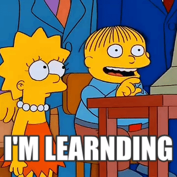
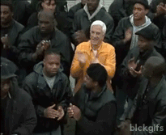
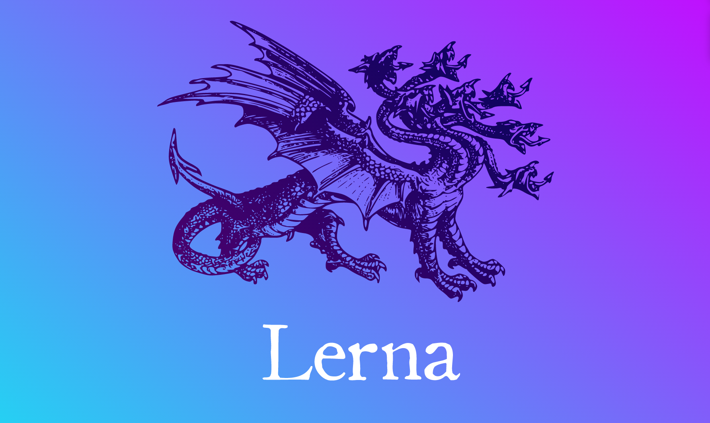

On Design Systems
... or what I learned building them
👋 My name is Dominik
- Currently with DTA
- Previously at Westpac GEL
- Tweets at @wilkowskidom
What we started with
Bootstrap 3 fork
- Answers to questions you didn’t ask
- Upgrade anxiety
- Monolithic CSS
- Not a11y
No open source
What we learned #1
Modules
Version each module independently
Open source
Clear upgrade paths
What we built then
Everything’s open source
Each module is a git submodule
- 
-
- Each module is built/tested in isolation
- Clean git history for each module
- Coding without merge conflicts
- One momorepo that manages them all
-
Staging
gh-pagesper module
Core modules hold reusable code
The blender
-
Build your assets online and download a zip
-
Each zip file comes with a "version string"
-
Return to your version anytime
-
Funky add-ons for engagement and smiles

Change-logs FTW
LESS
-
Everything in mixins
._badges() { @badge-background: rebeccapurple; .badge { background-color: @badge-background; } }@import (reference) "file-above.less"; .badge-label { color: @badge-background; }.badge-variation { color: rebeccapurple; } -
Settings per variable
@brand: WBC; ._badges( @brand ) { /* * SETTINGS */ .getBrand() when (@brand = BOM) { @background: #1f252c; } .getBrand() when (@brand = STG) { @background: #78be20; } .getBrand() when (@brand = WBC) { @background: #621a4b; } .getBrand(); .badge { background-color: @background; } } -
Lazy loading in less
@brand: WBC; ._badges( @brand ) { /* * SETTINGS */ .getBrand() when (@brand = BOM) { @background: #1f252c; } .getBrand() when (@brand = STG) { @background: #78be20; } .getBrand() when (@brand = WBC) { @background: #621a4b; } .getBrand(); .badge { background-color: @background; } } @brand: STG;
What we learned #2
5 core modules are 4 too many
Nothing is ever small enough
Dependencies need more juice
FOSS needs marketing
What we’re building now
cli first
One core only
No output for core
Monorepo
npm modules
Flavors of modules
Support for react, vue etc
Presets
Sass
-
Split into variables and output
-
Sass versioning
$name: "@gov.au/footer"; $version: "0.1.6"; $dependencies: ( ("@gov.au/core", "0.1.0"), ("@gov.au/lists", "0.1.1"), ); @include versioning-add( $name, $version, $dependencies );
-
Awesome mixins, great error messages
/** * Return a space value based on 4 and the unit em * * @param {number} $number - The space as a multiplier of 4 * @return {number} - The space in em's */ @function uikit-space( $number ) { @if type-of( $number ) != 'number' { @error "Captain I'm giving it all she's got but: the uikit-space mixin only takes a number!"; } @if type-of( $number ) == 'number' and not unitless( $number ) { $number: $number / ($number * 0 + 1); } $space: $number * 4; @return #{ $space }em; }